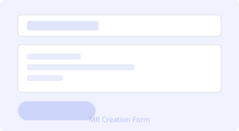
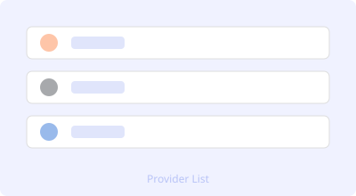
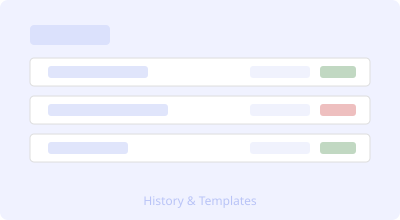

50 MRs, One Paste
Copy a list of branches into a textarea, select your target — and the tool creates merge requests for every single one. No more repetitive clicking.
Stop opening tabs. Paste a list of branches, pick a target — and let the tool do the clicking for you. Supports GitLab, GitHub, and Bitbucket.
Try It on GitHub →Four features that make releases actually fun.

Copy a list of branches into a textarea, select your target — and the tool creates merge requests for every single one. No more repetitive clicking.

One dashboard, three providers. Same interface, same logic. No more context switching between different UIs where buttons live in different places.
Test your config with a dry run first. Then hit auto-merge and let it do all the work. We don't judge. We automate.

Save your project config as a template once. Replay any past MR from history with one click. Perfect for Friday night hotfixes when your brain is already off.
Three steps. That's it.
Connect your GitLab, GitHub, or Bitbucket instance. Enter the API URL and token — once. It's encrypted, we never see it.
Got 5 branches? 50 branches? Paste them all at once. Optionally load the branch list directly from your repository.
Click Create — or run a dry-run first to check everything. Watch progress in real time and grab a report when it's done.
Fake quotes from very real pain points.
«We ship releases 3x faster now. Pasting 20 branches and getting all MRs in one go is pure magic.»
«Finally, one tool that speaks GitLab, GitHub, AND Bitbucket. No more context switching between three different UIs.»
«Dry-run saved me from merging into the wrong branch twice already. Worth its weight in gold.»
«Templates are a lifesaver for our release process. One click, and the whole release pipeline is set up. Ridiculously good.»
«Self-hosted, encrypted tokens, runs in Docker. Everything I wanted from a tool like this, nothing I didn't.»
We play nice with everyone.
MIT-licensed, self-hosted, fully transparent. Fork it, tweak it, make it yours. The code is on GitHub — go check it out, maybe drop a star while you're there.
View on GitHub ⭐